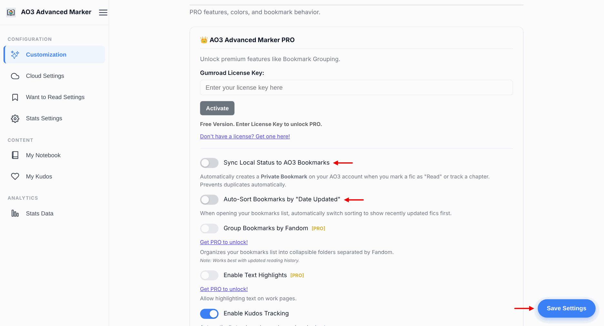
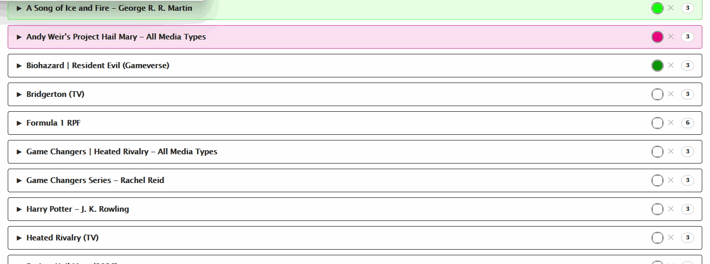
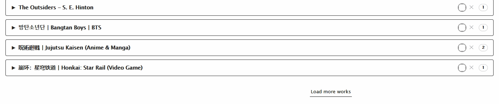

These options start turned off. You'll find them in the extension's Options Page, under Customization. Remember to click Save Settings after turning one on. The first two are free; grouping by fandom is PRO.

Sync Local Status to AO3 Bookmarks
Your reading status lives in the extension. With this option on, the extension also leaves a record on your AO3 account: every time you mark a fic, it creates a private bookmark for it, tagged "AO3 Advanced Marker Read".
- It happens when you click Mark as Read (on the fic's page or the ✔ in a list) or Chapter Read.
- The bookmark is private: only you can see it.
- If the fic is already in your bookmarks, nothing changes — no duplicates.
- Unmarking a fic doesn't delete its bookmark. Remove it on AO3 if you want.
To see these fics on AO3, open your bookmarks and filter by the tag AO3 Advanced Marker Read.
You need to be logged in to AO3 for the bookmark to be created. If you're logged out or lose your connection, the extension keeps the fic on a waiting list and creates the bookmark later, a couple at a time as you browse AO3 logged in.
Auto-Sort Bookmarks by "Date Updated"
AO3 opens your bookmarks sorted by the date you bookmarked them. With Auto-Sort Bookmarks by "Date Updated" on, your bookmarks open sorted by the date each fic was last updated, so fics with new chapters come first.
It only changes how the page opens: you can still pick another order in AO3's Sort and Filter.
Group Bookmarks by Fandom PRO
A long bookmarks list is hard to browse. With Group Bookmarks by Fandom on, your bookmarks page shows one folder per fandom, in alphabetical order, each with the number of bookmarks inside.
- Open or close a folder: click its name.
- Give it a color: click the circle on the right of the folder and pick a color. The folder takes that color, so your favorite fandoms stand out.
- Remove the color: click the ✕ next to the circle.
A fic tagged with more than one fandom goes in the folder of its first fandom. Fics without a fandom go in "Other / Misc.", always last.

Loading more bookmarks
The folders hold the bookmarks of the pages you've loaded. To bring the next page into the folders, click "Load more works" below the last folder.

Folder colors are saved with the rest of your data in your Google Drive backup, so they follow you to your other browsers and devices.